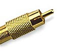
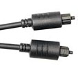
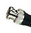

Digital audio may be represented as stereo audio, or multi-channel audio and transferred between devices as either electrical or optical signals.
Stereo audio is available in two standards:
- S/PDIF (Sony/Phillips Digital Interface Format)This is is very common between consumer or semi-pro devices
- AES/EBU (Audio Engineering Society/European Broadcast Union) format. This is more common in professional recording studio equipment.
Multi-channel audio may use one of several standards:
- ADAT(Alesis Digital Audio Tape)
- TDIF (Tascam Digital InterFace)
- AES/EBU, in multiple stereo pairs.
When connecting two digital devices, the clocks that keep the digital words in precise timing order must be synchronized. The S/PDIF standard provides for both stereo signals (left and right) as well as the synchronization signal to be carried on a single unidirectional cable. Therefore it generally takes two cables (one each for input and output) to complete a digital audio system.
When using electrical means to connect digital audio devices using S/PDIF, the signals are sent via coaxial cables (two-connectors, one wrapped around the other within the same sheath) and generally use RCA phono connectors.

Toshiba developed a method for using optical signals to connect digital audio devices using the S/PDIF standard. This standard is called TOSlink after the developer, and uses fiberoptic cables.

The AES/EBU standard calls for stereo signals to be carried on a single unidirectional cable, using XLR jacks and plugs. This requires two cables, one each for input and output. The synchronization signal may be included or carried on a third, separate coaxial cable, often labeled "Word Clock," using BNC connectors (shown here).

Multi-Channel digital audio is done either by using multiple pairs of AES/EBU connections, or by using the ADAT or TDIF formats.